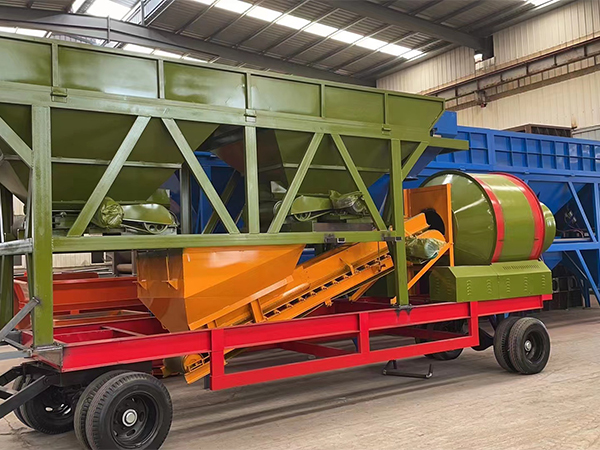
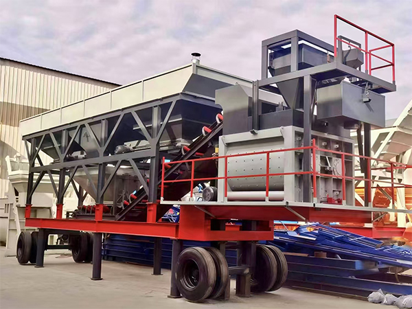
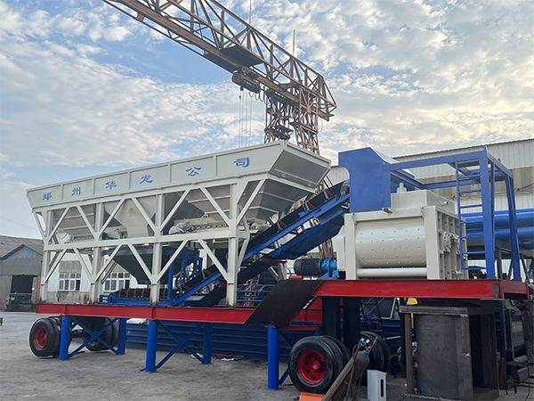
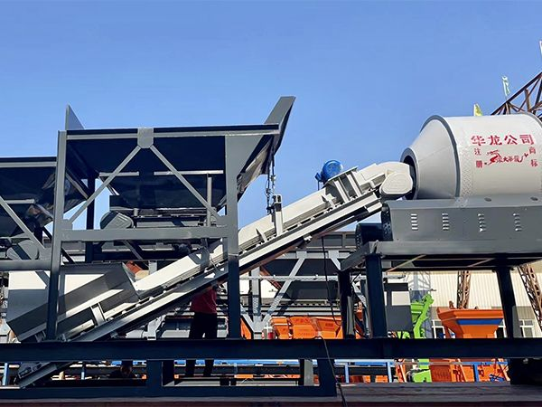

Product Overview
Mobile concrete batching plants are designed for projects that require quick setup and flexible relocation. Unlike stationary plants, our mobile units require no concrete foundation - they can be operational within hours of arrival. This makes them the ideal choice for road construction, remote infrastructure, and multi-site projects across Central Asia, Africa, and the Middle East.
Setup time - not days or weeks
Foundation work required
Tow to next site with a single vehicle
Reusable across multiple projects
Available Mobile Plant Types
Trailer Mobile Concrete Plant
Truck-towable design. No disassembly needed between sites. Ideal for highway projects and frequent relocation.
View Details
Drum Mobile Concrete Plant
Rotating drum mixing design. Cost-effective solution for small to medium construction projects.
Inquire NowKey Advantages
Ready in Hours
No concrete foundation needed. Arrive, level, connect - start producing within hours.
Easy Relocation
Truck-towable design. Move between project sites with a single vehicle, no disassembly required.
Harsh Condition Ready
Reinforced for high temperature, dust, and wind - typical Central Asia and Middle East conditions.
Lower Total Cost
No civil works cost. Reduced installation labor. Reusable across multiple projects.
Applications
- Highway and road construction projects
- Bridge and tunnel projects
- Remote area and mountain infrastructure
- Short-term construction and temporary projects
- Mining and energy project sites
- Urban renovation and repair work
- Linear engineering (pipelines, railways)
Why Choose YUDA
Factory Direct
No middlemen. Competitive factory pricing with direct manufacturer support.
Customized Solutions
Plants configured for your specific capacity, climate, and material requirements.
Installation Support
Technical team available for on-site guidance and commissioning worldwide.
Export Experience
7+ countries served. We understand international logistics and project requirements.
Get a Mobile Plant Quote
Tell us your required capacity and project location.
Request Quote → WhatsApp